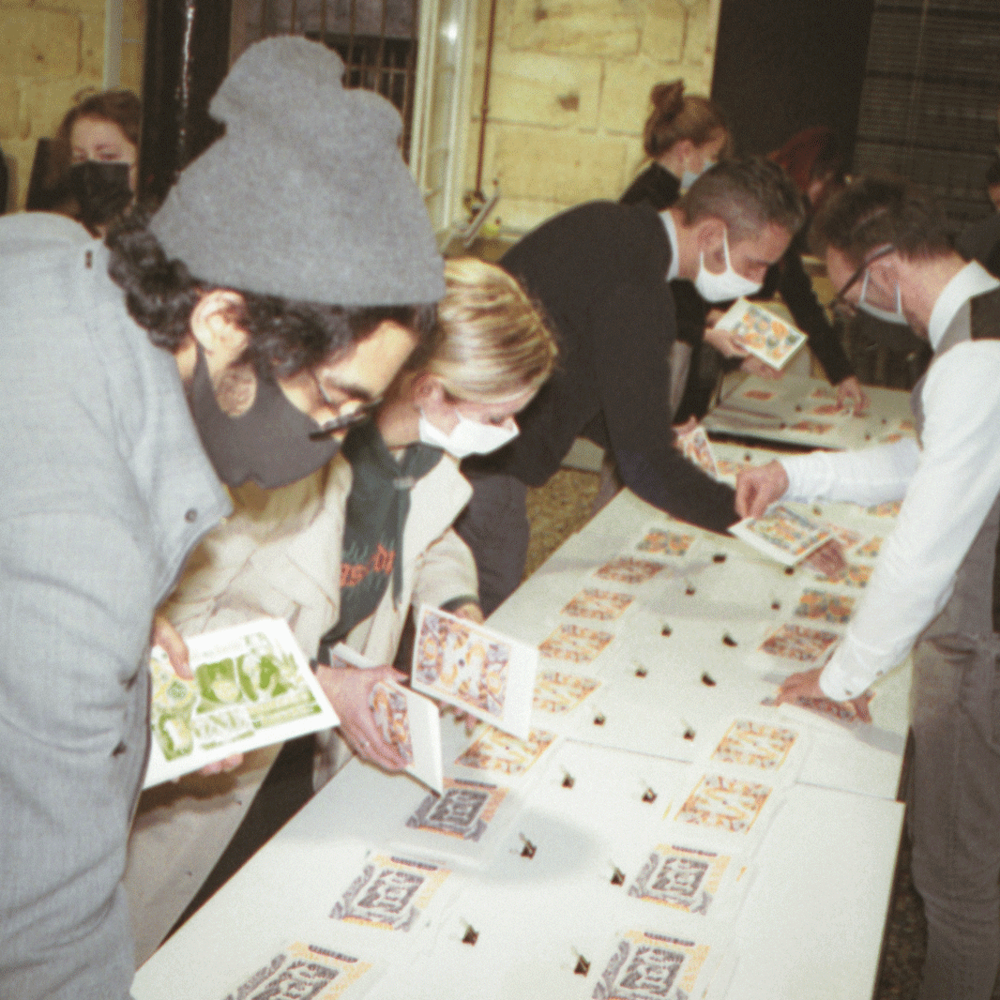
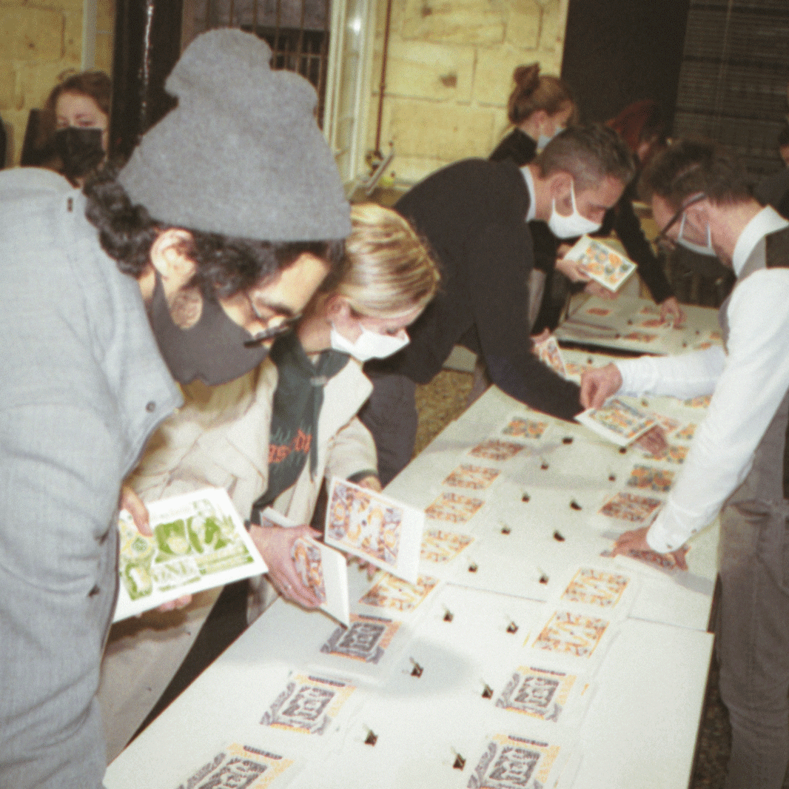
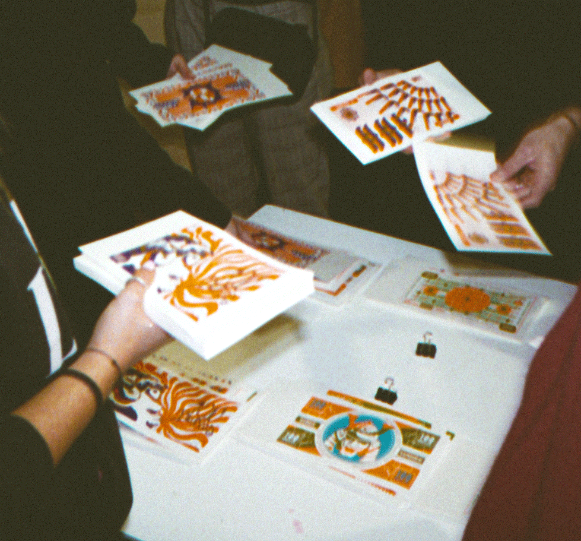
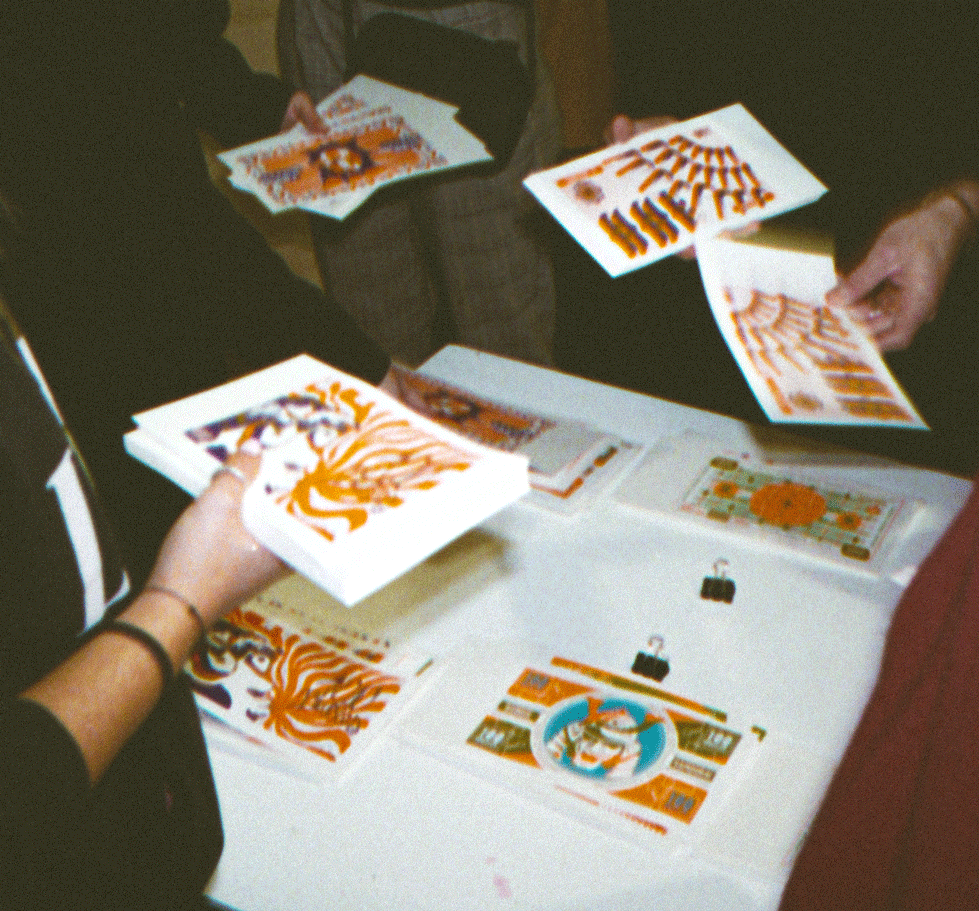
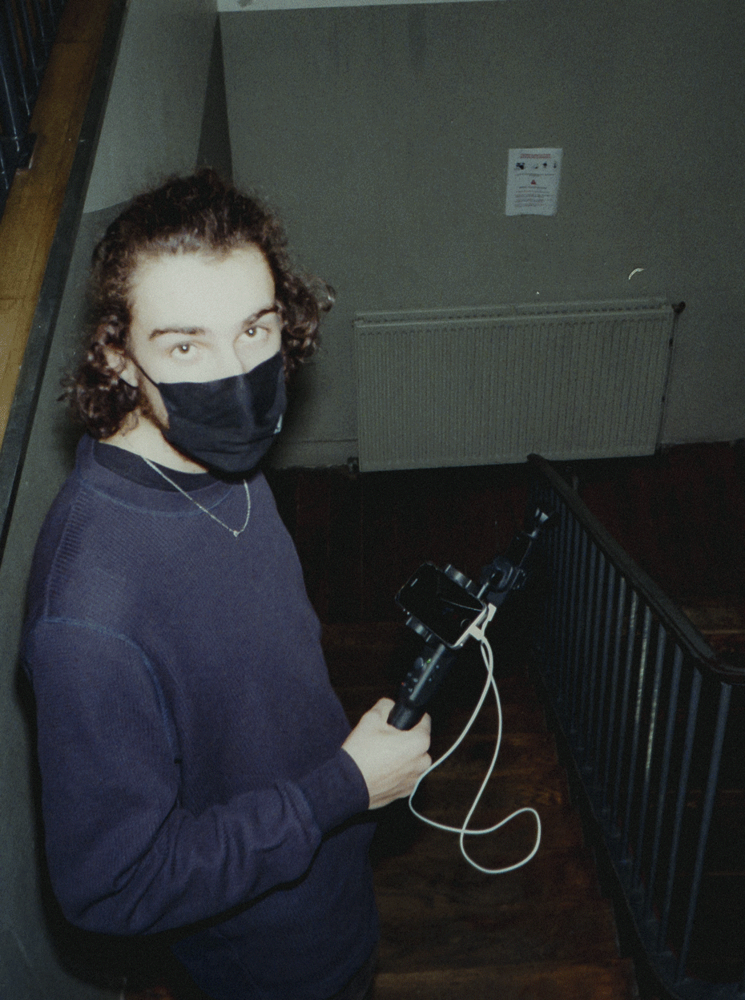
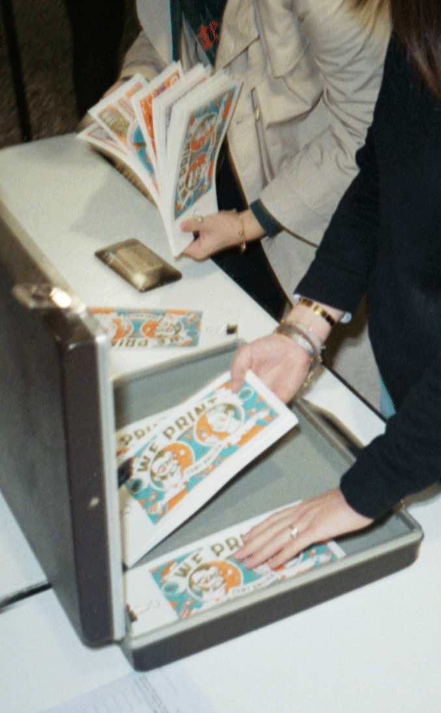
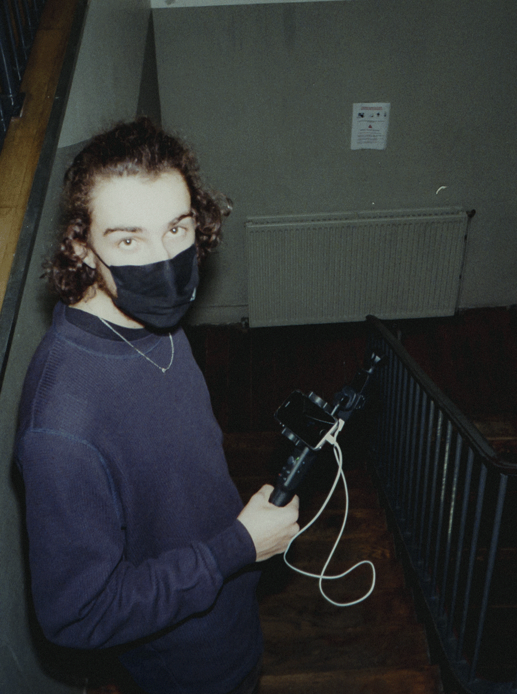
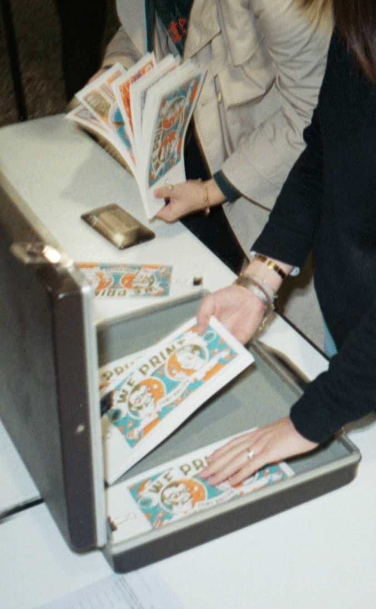

-
Le nimslo 3D est un appareil photo argentique stéréo qui peut prendre quatre images en même temps. Il utilise des pellicules de 35 mm avec pour ASA, soit 100 ou 400. Il a été fabriqué pendant les années 1980 et a été le premier appareil lenticulaire tridimensionnel grand public. Cette caméra a été repopularisée suite au clip «What If I Go?» de Mura Masa en collaboration avec le photographe anglais Salim Adam.
En cette période peu agréable et assez statique, je souhaite faire un reportage photo sur le workshop sérigraphie qui débutera le 8 février 2020. Regroupant une quinzaine d’élèves de différentes classes, le but est de montrer que malgré le port du masque, ce dernier rendant illisible le visage (ou toutes autres choses qui empêche la communication et l’intégration sociale), on peut créer une cohésion d’équipe, des émotions tout aussi fortes et visibles que sans les restrictions sanitaires.
Analogue aux photographes Salim Adam et Carl David Jones (ou encore aux journaux dans Harry Potter), je désire exploiter la perspective et les plans pour donner vie à l’image. Avoir une proximité, une chaleur et un amphi qui se dégage de cette série.
Étant novice en photographie argentique, de plus en stéréo, j’aimerai profiter de ce sujet pour mener ce sujet sur une voie la plus expérimentale techniquement possible : tester différentes références de pellicule, différents flashs, etc. The nimslo 3D is a stereo film camera that can take four images at the same time. It uses 35mm film with either 100 or 400 ASA for ASA. It was manufactured in the 1980s and was the first mainstream three-dimensional lenticular device. This camera was repopulated following the clip "What If I Go?" de Mura Masa in collaboration with the English photographer Salim Adam.
In this unpleasant and fairly static period, I would like to do a photo report on the screen printing workshop which will begin on February 8, 2020. Bringing together about fifteen students from different classes, the goal is to show that despite wearing a mask, the latter makes the face unreadable (or all the other things that choose communication and social integration), we can create team cohesion, emotions just as strong and visible as without the sanitary restrictions.
Analogous to photographers Salim Adam and Carl David Jones (or even newspapers in Harry Potter), I want to use perspective and blueprints to bring the image to life. To have a proximity, a warmth and an amphitheater that emerges from this series. Being a novice in film photography, more in stereo, I would like to take advantage of this subject to lead this subject on a path that is as technically as possible: testing different film references, different flashes, etc.
Il te faut un ordinateur pour voir cette page !


 

 


 


